Universities & colleges
Ontario Tech University and Durham College
Studies & learningNETSOC & campus lifeCampus performance memoriesChristian Powlette / Technology & learning
Enterprise IT Support/Network Security/Systems Administration
A place to keep track of the things I build, fix, and learn through work and school. I enjoy figuring out how technology works, helping people with it, and sharing a few things from the journey.
Browse by institution & setting
Ontario Tech University and Durham College
Studies & learningNETSOC & campus lifeCampus performance memoriesSignature Aluminum Canada
My roles at SignatureProjects & technical notesDRABPE and Community Development Council Durham
My time with DRABPECommunity Development Council DurhamADaPT for Black Youth and shared experiences
My ADaPT experienceWork & community photo memoriesEvents & performance memoriesA little about me
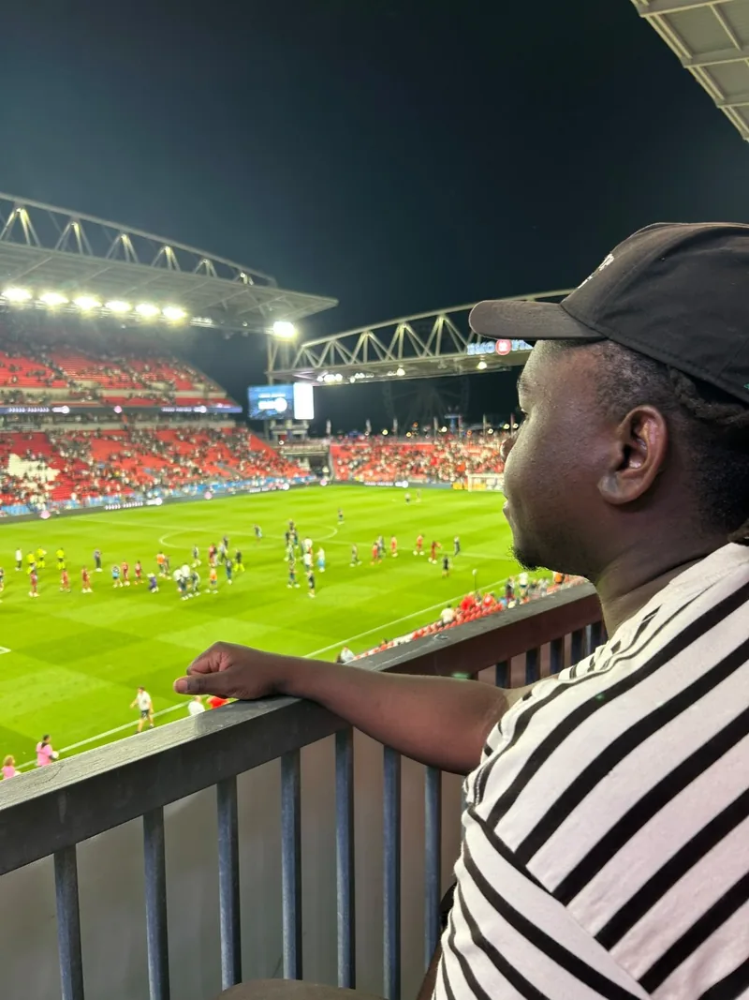
I started in web development and digital infrastructure for nonprofits before moving into enterprise IT support and network security. Today, I support manufacturing and nonprofit environments while completing a Bachelor of Information Technology (Honours) in Network Systems Security at Ontario Tech University, following Durham College’s Computer Systems Technician Transfer program.
My work combines infrastructure, cybersecurity monitoring, identity and access management, cloud productivity services administration, endpoint support, automation, and technical documentation.
I enjoy investigating technical problems, identifying their root causes, and building solutions that are secure, maintainable, and understandable to the people who use them.
Professional practice
Selected work in support, systems administration, web development, and automation. These summaries focus on my contribution and results.
Web development
A searchable platform connecting businesses and community.
Designed and maintained responsive interfaces, supported listing and content workflows, and improved accessibility and usability.
Collaboration planning
A documented transition plan for users and administrators.
Reviewed requirements, prepared a migration plan, and documented user guidance and handoff steps. This was planning work.
Planning record →Systems administration
Reliable file access and clear recovery documentation.
Supported shared-resource administration, reviewed access requirements, and documented maintenance and recovery tasks.
Enterprise IT support
Incident resolution, user access, endpoint support, and practical documentation.
Resolved more than 90 help desk tickets during my summer internship, documented recurring fixes, and supported business users across technical and non-technical teams.
Experience →Professional practice
My work brings together troubleshooting, access administration, recovery planning, and documentation.
Gather requirements, investigate symptoms, and explain options clearly.
Resolve incidents, manage access requests, and document repeatable tasks.
Record changes, prepare handoff notes, and check outcomes.
Figuring things out
What I’m up to
A little snapshot of where I am in my work and studies.
Places along the way
01 / Manufacturing
Signature Aluminum Canada
02 / Nonprofit
Durham Region Association of Black Professionals and Entrepreneurs
03 / Community services
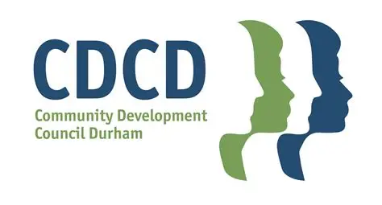
Community Development Council Durham
Professional practice
Capabilities developed through professional work, coursework, and independent practice.
Incident triage, endpoint troubleshooting, user assistance, asset records, and technical documentation.
Account lifecycle support, least-privilege access, shared-resource administration, and recovery planning.
Connectivity troubleshooting, security-event review, network fundamentals, and controlled networking labs.
HTML, CSS, JavaScript, accessible interfaces, content operations, and database-backed applications.
Workflow design, scripting, data preparation, and assistants with documented human review.
04 / My journey so far
A record of the places I’ve worked, the people I’ve supported, and what I’ve had the chance to learn along the way.
2 roles
Ontario, Canada · Manufacturing IT
– present
Continuing after my summer internship, contributing to website modernization, business tools, workflow automation, and collaboration platforms alongside enterprise IT support.
–
Resolved more than 90 help desk tickets across network, server, identity, ERP, and hardware incidents.
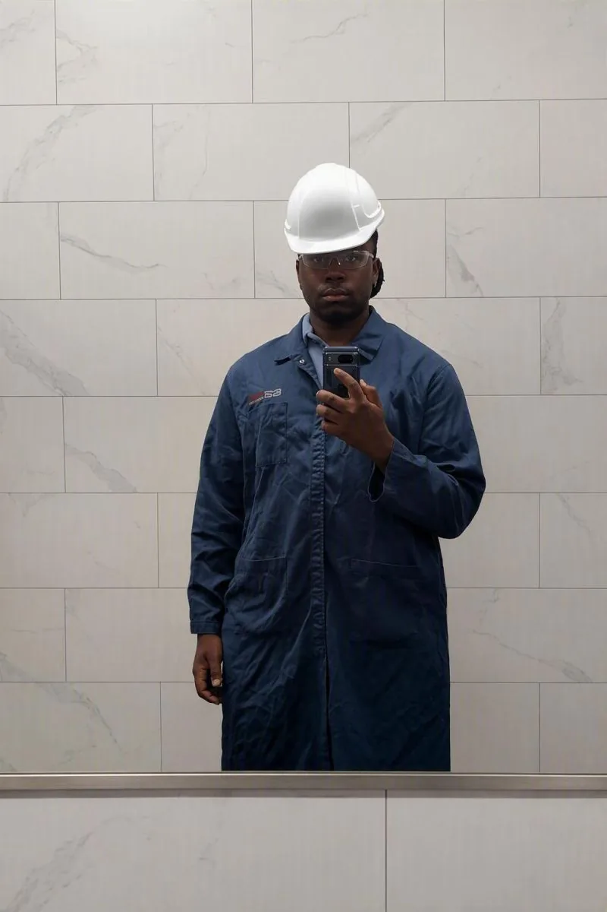
4 roles
Ontario, Canada · Hybrid
– present
Supporting cloud services, shared resources, business platforms, and the documentation that keeps nonprofit operations maintainable.
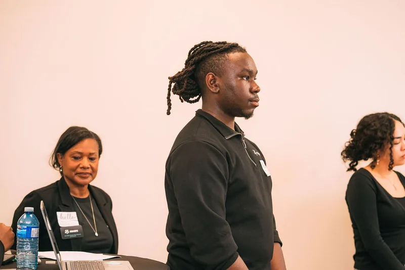
–
Managed workplace technology and developed responsive websites to support the organization’s daily operations.
–
Supported community outreach with reliable digital tools, technical support, and secure information management.
–
Created website and social content that documented community activities and kept audiences informed.
1 role
Ontario, Canada · On-site
–
Kept laptops and tablets accurately documented, maintained, and ready for deployment.
1 role
Ontario, Canada · Hybrid
–
Worked directly with clients to turn requirements into responsive, accessible websites and practical digital solutions.
Selected client workHomebound Wellness Centre Inc. · The Lighthouse Retreat Inc. · Treasured Moments · SalesForce1 · DRABPE
Professional practice
Read about the problems, my contribution, and the lessons learned.
Shared-resource support and operational documentation.
Read the project recordResponsive interfaces, listing operations, and accessibility.
Read the project recordA controlled learning exercise in switching and verification.
Read the lab record05 / Continuous learning
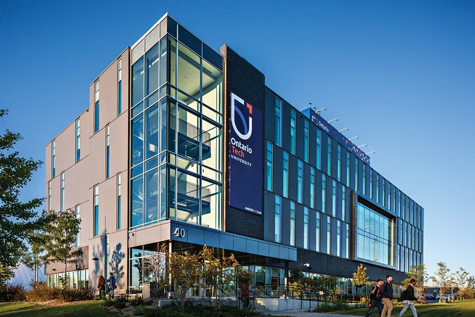
Bachelor of Information Technology (Honours) · Network Systems Security · expected April 2027
Computer Systems Technician Transfer diploma · completed October 2025
I serve as Deputy Executive on the Information Team at NETSOC, Ontario Tech University's Networking & IT Security Students' Association. My university involvement also includes the Black Student Collective and the TACOPS CTF community.
Languages
English: native or bilingual proficiency.
French: professional working proficiency.
Volunteer experience
Ontario Tech University Engineering STEM Conference · March 2025.
Nobellum Accelerate Durham Pitch event · February 2025.
ADaPT for Black Youth / My experience
“The SEO workshop played a meaningful role in helping me prepare for and succeed in this internship opportunity. I really appreciate that.”
Workplaces, learning & community
My work spans user support, technical documentation, web development, and workflow improvement. The experience timeline describes my roles and contributions.
View my rolesA couple of small snapshots from getting out, meeting people, and exploring ideas beyond the classroom.
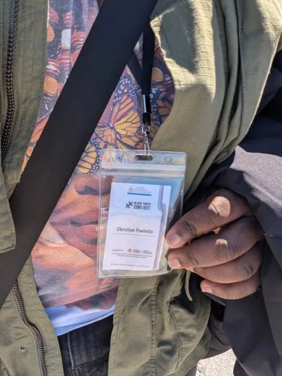
I was fortunate to attend Catalyst: the International Summit on Cultural and Global Diplomacy, hosted by the Organization for Economic Development and Diplomacy. Day two, March 28, 2026, left me thinking about cybersecurity, AI, critical infrastructure, and the role technology plays in international policy. I also enjoyed seeing the Digital Innovation Program highlighted and celebrating the Lead Like a Girl and Black Diplomats Academy graduates. Thank you to Laurene Williams from ADaPT and Jayden Prempeh-Vanhorne for making the experience so enjoyable.
The summit took place at DoubleTree by Hilton, 108 Chestnut Street, Toronto, Ontario, Canada. Original summit information ↗
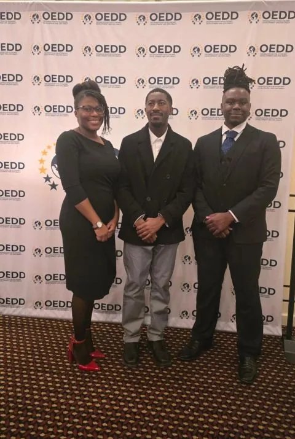
I was glad to help with registered guests and attendees at Black Visionaries on the Big Screen in Ajax. The event brought together the Town of Ajax, DRABPE, and the Toronto Black Film Festival. A small part to play in a celebration of storytelling and community.
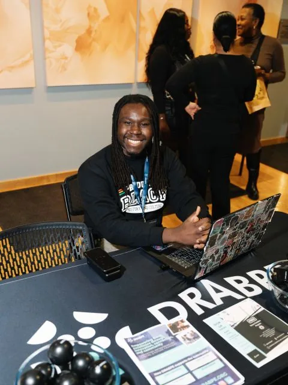
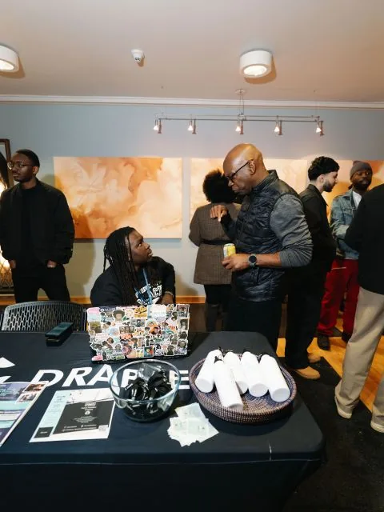
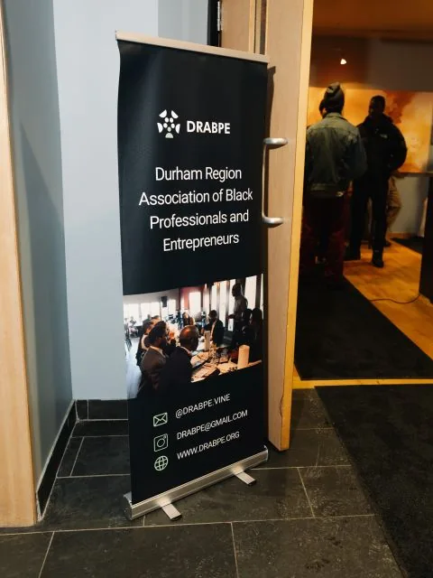
A few more moments of being around people, ideas, and community projects. These are the kinds of things I like having a place to look back on.
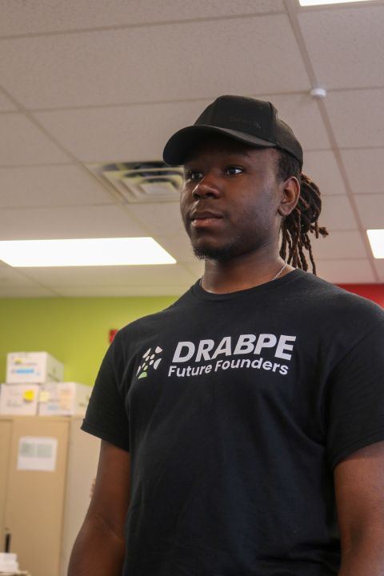
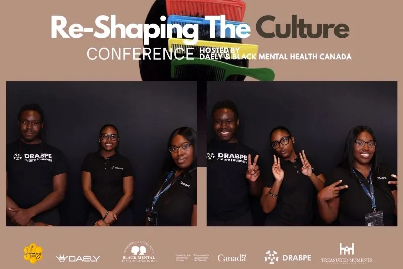
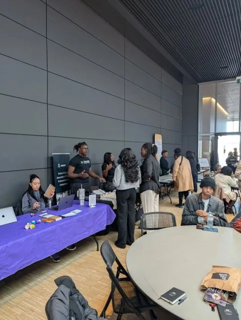
A couple of everyday moments among the work and study notes.
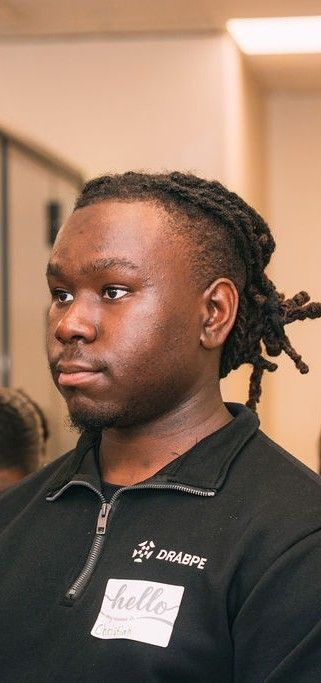
Currently working on
Current responsibilities and learning priorities alongside my degree.
Updated November 2026
User support, access requests, shared resources, and operational documentation in my current roles.
Continuing CCNA preparation and CCNP ENCOR / ENARSI learning, supported by practical networking labs.
workflow automation, business scripting, and source-grounded assistants with documented dependencies and human review.